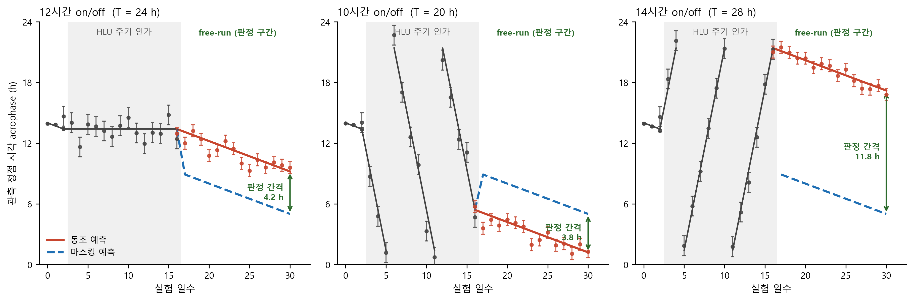
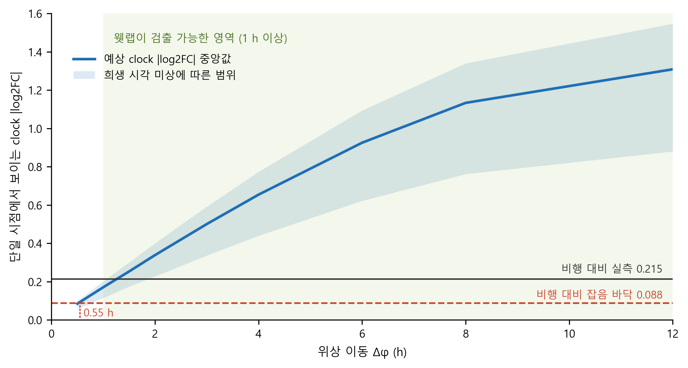

KASA 연구계획서 — 「2 연구의 내용 및 방법」 · 「3 기대효과 및 활용방안」
드라이랩 담당분 원고 · 2026-08 (최종 압축본)
2 연구의 내용 및 방법
□ 연구방법
◦ (나) 드라이랩 — 공개 데이터로 웻랩의 측정 지표와 표본 수를 사전에 확정한다
- NASA 공개과학데이터저장소(OSDR) 스터디 633건 · 파일 157,801개, 생명과학데이터아카이브(LSDA) 2,593건, 공개 저장소와 문헌(중력 조건 11종 × 리듬 지표 8종)을 전수 조사하여 원자료를 확보하고, 측정 방식이 다른 자료를 cosinor 지표로 통일한다.
◦ 표본 수 산출
- 실측 위상 추정 오차를 잡음으로 두고 계획서의 회귀선 판정 기준을 적용한다. 절편 검정은 새 위상 형성을, 기울기 검정은 주기 변화를 묻는다. 주기가 T이면 정점이 하루 (T − 24)시간씩 이동하므로 기울기 검정의 효과 크기는 설계가 정한다. 개체별 회귀 후 1표본 t 검정을 적용하며, 개체 고유 위상이 상쇄되어 적은 마리 수로도 성립한다.
◦ 예상 결과와 역문제 설정
- 동조 · 마스킹 두 가설의 일별 위상 궤적을 정의하고 실측 오차를 표준오차로 부여한다. 또한 위상만 이동했을 때 단일 시점 전사체에서 보일 발현 변화를 지상 아틀라스 진폭으로 미리 계산한다.
□ 연구절차
- 팀원 A(전산 전공) : 공개 데이터 조사, 공통 지표 · 표본 수 · 역문제 예측 산출, 재현 스크립트 작성.
3 연구결과의 기대효과 및 활용방안
□ 예상되는 결과
◦ (1) 이 질문에 답할 공개 데이터가 존재하지 않음을 확인하였다
- OSDR 파일 157,801개 중 리듬 자료는 52개(5개 스터디)뿐이고 하루 4점을 24시간에 걸쳐 확보한 것은 0건이다. 일주기를 목적으로 한 유일한 비행 실험은 NASA 아카이브에 "원자료가 제출되지 않음(No data submitted by PI)"으로 남아 있고, 지상에서 중력을 되돌린 유일한 통제 실험은 위상을 재지 않았다.
- 선행연구가 부족해서가 아니라 이 질문에 답할 데이터를 아직 누구도 만들지 않았다. 웻랩이 그 첫 자료가 된다.
◦ (2) 측정 지표 · 표본 수 · 판정 경로가 산출되었다
- 1차 지표를 심부체온, 2차 지표를 활동량으로 둔다.
| 표 1. 검정력 0.8 최소 마리 수 (처치 전 3일 · 처치 14일 · α=0.05) | ||||
| 지표 | 절편 2 h |
기울기 12h군 |
기울기 10h군 |
기울기 14h군 |
| 심부체온 | 7 | 10 | 3 | 3 |
| 활동량 | 12~16 | 16 초과 | 3~5 | 3~10 |
- 후지현수 중에는 지표가 억제되어 위상 추정 오차가 3.6~38배 커지므로, 제거한 자유진행(free-run) 구간이 주 판정 경로가 되어야 한다.
- 10 · 14시간 군은 위상이 하루 4시간씩 표류해 기울기 검정이 3마리로 성립하나 12시간 군은 0.3시간이라 절편 검정에 의존한다. 군별 주 검정을 사전 지정한다.
◦ (3) 웻랩 수행 후 예상되는 결과
| 표 2. 군별 예상 판정 간격 (심부체온, 8마리) | |||
| 실험군 | 주기 | 예상 간격 | 표준오차 대비 |
| 12시간 on/off | 24 h | 4.2 h | 7.1 배 |
| 10시간 on/off | 20 h | 3.8 h | 6.4 배 |
| 14시간 on/off | 28 h | 11.8 h | 20.0 배 |
- 주 가설. 세 군 모두 위상이 인가 주기를 따라 이동하고 제거 후에도 유지된다. 판정 간격이 표준오차의 6.4~20배라 세 군 모두 검출 가능하며, 빛이 아닌 중력만으로 생체리듬이 동조된다는 결론이 성립한다.
- 10시간 군이 결정적이다. 내인성 주기 23.7시간과 우연히 일치할 수 없기 때문이다.
- 대안 결과. 처치 전 위상으로 복귀하면 마스킹이며, 그 경우에도 지상 모사의 유효 경계가 정해져 어느 쪽이든 결론이 난다.

그림 1. 웻랩 예상 결과. 음영은 후지현수 인가 14일. 오차막대는 실측 위상 오차의 8마리 군평균이다. 인가 중에는 두 가설이 겹치고, 제거 후 갈라지는 간격(초록 화살표)이 판정 신호다.
◦ (4) 웻랩 결과가 기존 우주비행 자료의 재해석을 가능하게 한다
- 공개 비행 전사체는 단일 시점이라 진폭 변화와 위상 이동을 구별하지 못한다. 웻랩이 위상 이동량을 재 오면 그 미지수가 채워진다.
- 비행 자료가 해석 가능해지는 하한은 약 0.55시간, 웻랩 검출 하한은 약 1시간으로 두 범위가 겹친다. 추가 우주 실험 없이 축적된 자료의 재해석이 가능해진다.

그림 2. 역문제. 위상만 Δφ 이동했을 때 단일 시점 전사체에서 보일 발현 변화. 음영은 희생 시각 미상에 따른 범위다.
- 예측은 웻랩 전에 확정해 둔다. 측정값이 하한보다 작으면 비행 자료의 무신호가 '효과 없음'이 아니라 분해능 한계임이 확정되고, 크면 예측에 못 미치는 만큼이 중력 이외 요인의 기여 하한이 된다.